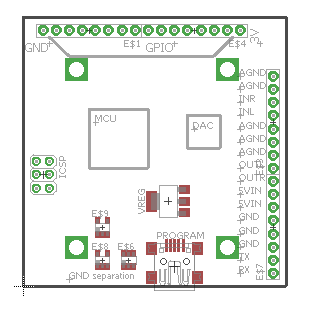

Hello
Is there a plan to release a kind of axoloti minimal dev board?
I mean, an axoloti brick without headphone/audio jacks nor power, midi and USB host on board connector ?
The idea would be to be able to integrate that brick in any kind of case (eurorack?) Without the risk/pain of having to desolder connectors.
This allow to chose the necessary input/output when needed
Minimal axoloti board
alangave
#1
[Need Help with SPI] Euxoloti for axoloti (Eurorack Module)
Kalle
#2
Hey
I had the same idea thought in the beginning but the more i got to think about it the more i got to the solution to make and expansion PCB with Pots and mini CV inputs to start with and build it in to a neat and nice little box i could have on the side of the eurorack... almost like the Korg SQ-1 
Im not sure brick is a good term 
I guess you mean, like the Axoloti core board, before its been stuffed/wave soldered?
johannes
#4
No current plans to make a devboard without connectors. Such a design would require a lot of board-to-board connector pins to accommodate all possible use cases. If the audio codec would still be onboard, it will still miss the possibility of multichannel, it would be basically only processor, memory and crystal.
It sounds a bit like the raspberry pi compute module what you are asking for, and as far as I know this approach has not been a success.
I think the current design is a reasonable compromise that fits tabletop, rackmount and stompbox integration. For eurorack, the midi+power part can be cut off and mounted sideways. It's 5cm deep, that will still fit most eurorack cases except the most shallow ones. You will keep frontpanel access to usb host/device, sdcard, headphone jack. The 6.3mm jacks are not the right thing for eurorack, but if you remove these you'll find solder pads for 3.5mm jacks. Or you could leave the 6.3mm jacks in place, and break out to external 3.5mm jacks. And perhaps add level shifting/gain for +-10V.
The DIN midi + power part can still be wired after separating, and the mounting holes line up, so both parts can be sandwiched.
alangave
#5
Actually, I was thinking about nothing more than the actual board, but kind of "unfinished", with all non-smd component (USB, 6.3/3.5 Jack, Midi, Power ) not stuffed, just the minimal for programming (micro USB and SD), not a redesign !
johannes
#6
That is much easier, as this is how it comes out of the SMD assembly line. Not sure if there is sufficient demand to motivate a separate product in stock and sales.
The 3.5mm headphone jack would still be there, since that is SMD too.
So people who like this idea, please give this a like, so I get some indication of demand.
it would be good for the eurorack effort, not having those big jacks and so.
i'd take another board!
gjvti
#9
Since I missed initial fundraising campaign - for me priority would be availability of fully assembled product
callipso
#10
I'd like to see a 'compact' version of the Axoloti, perhaps a credit card sized board with only pin headers for all the audio and midi connections and with less GPIOs..
johannes
#11
If audio and midi are on pin headers, it 'd probably also need sdcard, usb device and usb host on pin headers, and require quite some work before users can get started. And then, to keep it really compact, it 'd need a higher density board-to-board connector than pin headers and then it needs a custom circuit board to host it....
Axolotiny version for embedding
callipso
#12
I don't think it would be necessary to have the uSD externally as it's not something you disconnect/change often. Also, as opposed to the TRSs and DINs it's quite small.
Inaba
#13
i don't know if this is still needed, but to me it is, as i am wanting minimal modules (only mcu/dac/gnd isolation/usb/volt reg/icsp header and some analog pins broken out)
note: no extra ram! (aka, the bare minimal needed)
here's my personal reasons:
space is a luxury to me
i don't need he midi dins, jack conenctors, microsd, it takes just too much space when i can simply use header pins for the jack sockets and midi.
cost reduction per pcb? (fewer components needed, smaller pcb size)
my plan with a few of these modules would be:
use them as simple oscillators/adsr envelopes/filters/compressor.
while using a axoloti core as effect processor (with the help of the DRAM)
if i need to get this with axoloti core modules on their own, it will:
require more space
require more money(?)
not be used to it's potential (if i use a axoloti core as a polyvoice oscillator, i down't need all the features like DRAM, sd, ect)
quick drawing of what i'd love to have (size: about 50x50mm):

johannes
#14
I could think of a dozen design variations. My design goal was a board that does not require any soldering, feature-rich, and serving as many use cases as reasonably possible. Additional design variations require significant time and investment: design, prototyping, testing, test-jig development, manufacturing, testing, stock... Unless there is a large demand, I will stick to a single "core" variation. Most relevant signals are available on pads, the power/midi section can be cut off, other connectors can be removed to save vertical space.
Inaba
#15
@johannes
you got a point there.
also: just curious, if there's enough people interested in axoloti without the in/out jacks, midi plugs and usb header soldered on, what would the price tag be of a single board?
[Need Help with SPI] Euxoloti for axoloti (Eurorack Module)
johannes
#16
The part cost for these connectors is around 3 euro, and takes about one minute and a half of manual assembly time per board... Offering a version without these connectors complicates stock management and order fulfillment.
gloom_and_glare
#17
So is there any chance a dedicated "core" will ever see the light? Like with just the bare essentials? (Somewhat like so, but with the larger SRAM?)
It would make these kinds of customizations much easier and neater.
thetechnobear
#18
this has been discussed extensively (and commented on by Johannes) in this thread
never say never, but purely as an observer of that thread, Id say its unlikely... (read the above thread for reason)
Diego
#19
It is an open hardware...I think It will not take long until somebody release is own axoli compatible board.
thetechnobear
#20
ok, moved the above posts here, as I think its more appropriate, since was not really about eurorack etc.
@Diego its a possibility, but they will still 'suffer' the same limitations as johannes, sure they can produce their own boards, but if they want to sell them, why do you think their production costs will be lower? Johannes has already said, he thinks it would only reduce the cost by 3-5 euros... and the market seems small, only about 5 people on this thread... so seems production run would be low ... 50 boards?
then of course the software would need to (potentially) be altered if any hardware change was made, and then distributed...
I see it unlikely that more than a few such custom boards would be made, seems much easier to just take a axoloti core, and desolder and remove the parts you don't want.
I think much more likely a eurorack axoloti has viability as a variant, since that will appeal to a new market.
but this is just as a casual observer, so its quite possible/likely I'm wrong.